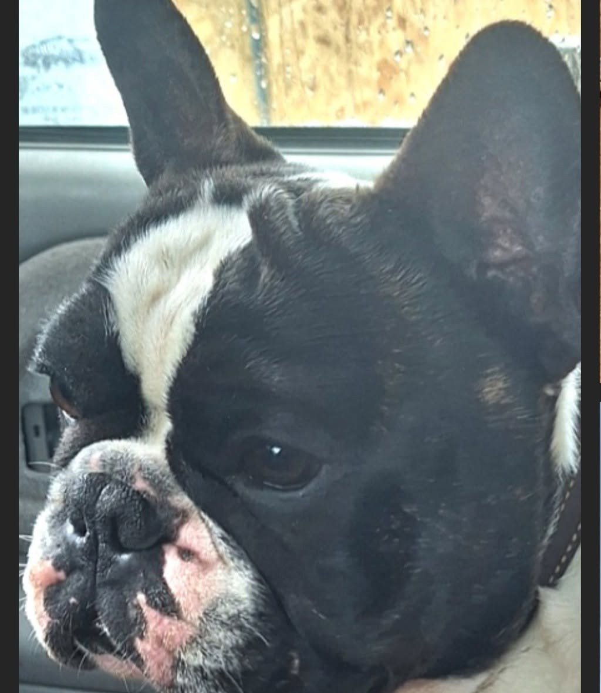
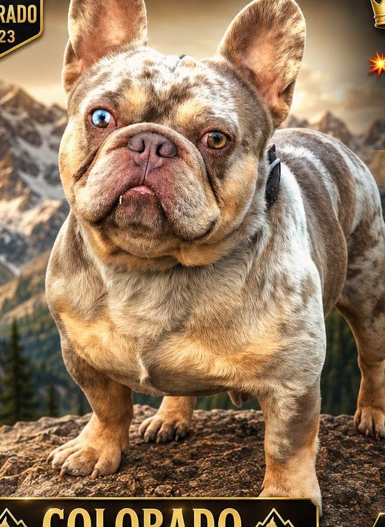
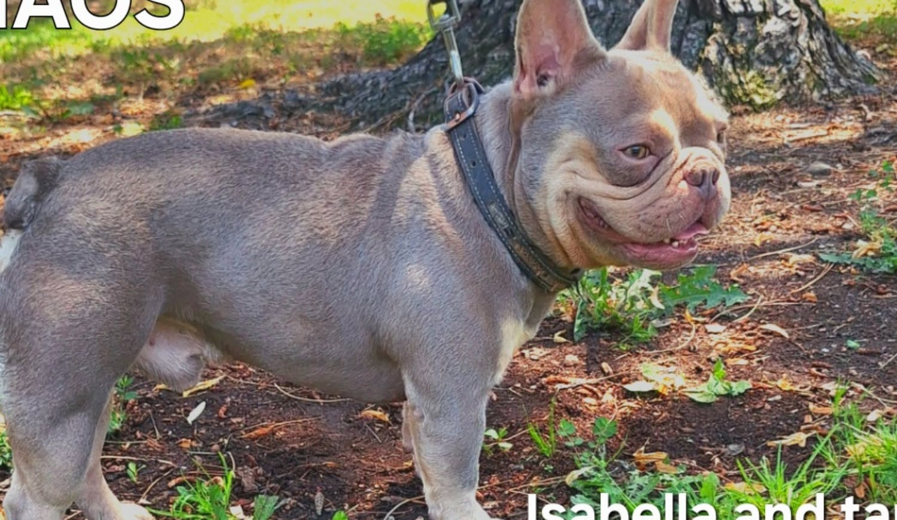
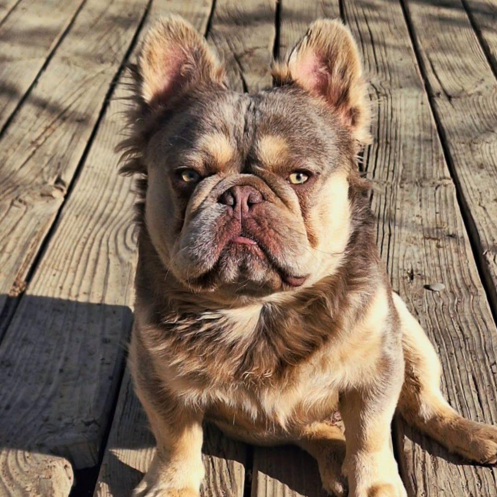
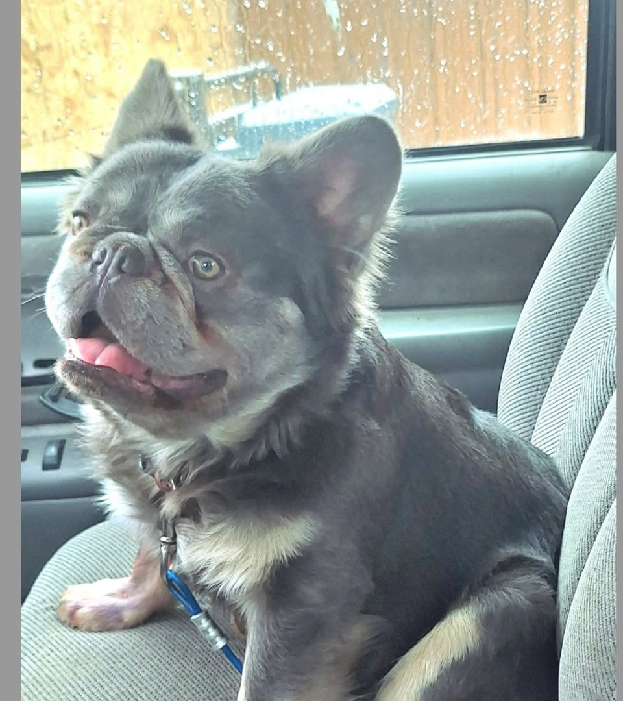
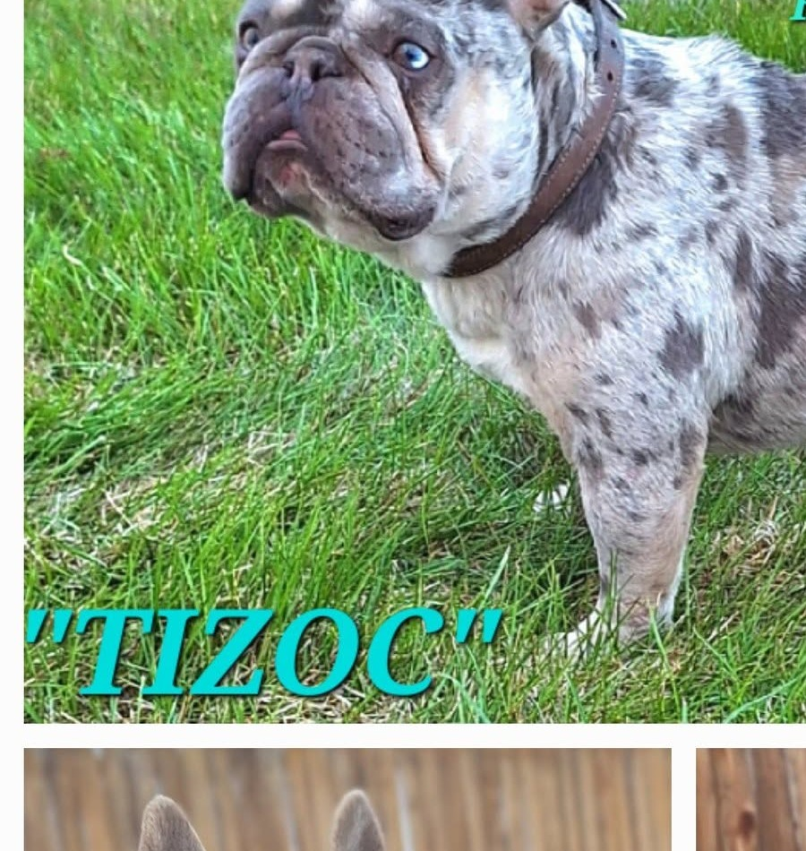

Genética French Bulldog · Colorado
Carácter.
Linaje.
Presencia.
Conoce nuestros sementales French Bulldog y encuentra la combinación genética adecuada para tu programa de crianza.
Atención personalizada · Información sobre disponibilidad por teléfono

Semental destacadoRomeo
Selección de sementales · Atención personal · Colorado
Nuestro programa · 06 perfiles
Sementales French Bulldog
Explora los perfiles y contáctanos para conocer detalles de linaje, disponibilidad y opciones de servicio.




Selecciona una categoría para explorar los perfiles. Consulta directamente la disponibilidad y los detalles de cada semental.
Crianza con información
Pruebas de salud: ¿qué revisan?
Todos los sementales cuentan con evaluaciones de salud, aunque el tipo de prueba y los resultados varían por perro. Estos estudios ayudan a conocer mejor ciertos riesgos y a tomar decisiones de crianza más informadas. Pide el informe individual para confirmar qué prueba se realizó, cuándo y cuál fue el resultado.
Evaluación cardíaca
Revisa el corazón para detectar algunas alteraciones congénitas o adquiridas. Un examen avanzado con ecocardiograma ofrece una evaluación más detallada; consulta el tipo de examen y la fecha del informe.
Tráquea
La evaluación radiográfica mide el diámetro y la forma de la tráquea. Ayuda a identificar hipoplasia traqueal, un estrechamiento que puede contribuir a dificultades respiratorias.
Caderas
Las radiografías permiten valorar la conformación de las articulaciones de la cadera y buscar signos de displasia. La información ayuda a considerar movilidad y riesgo articular al planear cruces.
Codos
Las radiografías buscan cambios asociados con displasia del codo. Esta condición puede relacionarse con dolor, menor movilidad o cojera, por eso el resultado aporta información para decisiones de crianza.
Rótulas
El veterinario palpa las rodillas para revisar si la rótula se desplaza de su sitio. La luxación puede afectar la marcha y, en algunos perros, causar molestias o cojera.
Pruebas genéticas
Cuando se realizan, buscan variantes concretas asociadas a enfermedades hereditarias. Sirven para conocer si un perro es afectado, portador o libre de la variante analizada; cada prueba cubre condiciones específicas.
Importante: una evaluación normal no garantiza que el perro nunca desarrolle una enfermedad ni que sus cachorros estén libres de problemas. Los resultados preliminares pueden requerir seguimiento; revisa informes vigentes de ambos padres con tu veterinario. Las pruebas de color o rasgos del pelaje tampoco sustituyen las pruebas de salud.
Un buen comienzo
Hablemos de tu próxima camada.
Cuéntanos qué buscas en tu programa de crianza. Te orientaremos sobre los perfiles y la disponibilidad de nuestros sementales.
Iniciar conversación ↗01Comparte tus objetivos de crianza.
02Revisamos juntos los perfiles disponibles.
03Consulta el linaje y la información de salud disponible.
04Confirma los detalles directamente con nuestro equipo.
Contacto directo
¿Te interesa alguno?
Llámanos o escríbenos para conocer más.